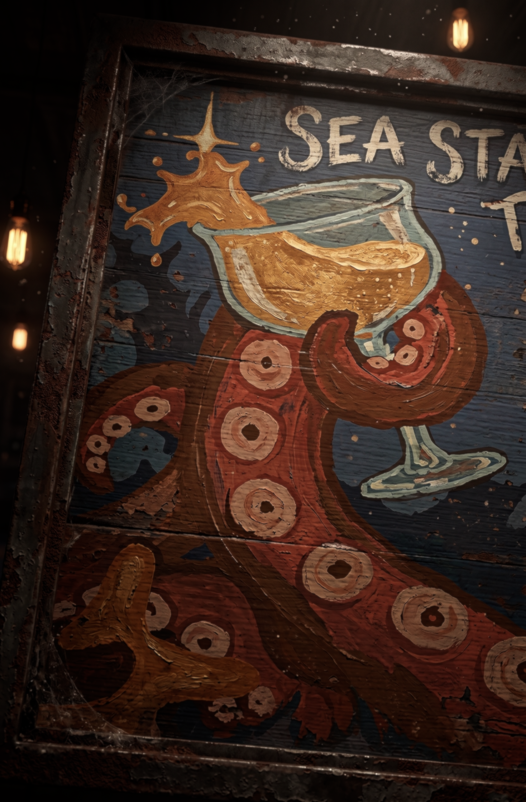

A free AI agent that lives in your Obsidian vault.
One click's ease. Nothing leaves your house.
That citation is the whole point. This isn't a chatbot guessing. It is your own notes answering, and you can click straight through to check. The thinking happens on your own machine, against your own model.
Right now you get to pick two of three:
Goose, Aider, hand-rolled stacks — but configuring one is a weekend of config files and silent failures.
They work beautifully — and they read your notes. Your writing leaves the house and you don't see it happen.
The right idea, and wiring it together yourself is left as an exercise for the reader.
A zero-config, fully-local agent that treats your Obsidian vault as first-class memory, runs on whatever local model you already have, and plugs into whatever agent app you already use.
Everything in Sea-Star renders the same four things — as rows you can scan, as a starfield you can explore, and as an answer any connected agent can ask for.
Your notes. Everything connects to it; that part is never in question.
The app driving Sea-Star. Pick what you're talking to.
The persona inside it, riding a model.
Where that model comes from — on this machine, or an API you chose.
A menu-bar app on your Mac. No terminal, no account, no setup wizard that explains itself. It shows you what is actually running on your machine — and tells you the truth about each thing, including the things that aren't working.
Sea-Star talks to any OpenAI-compatible endpoint. If your local model server speaks that shape — which nearly all of them do — Sea-Star uses it unchanged. You never touch this layer again.
And it works with whatever agent you're using — Osaurus, Claude Desktop, Cursor, TRAE — because MCP is a standard rather than a product. Sea-Star is both a server and a client: it offers your vault to any of them, and can borrow other MCP servers as its own tools.
# No setup needed if you already run a local model. uvx --from git+https://github.com/Roqett/Sea-Star sea-star serve # Then point any MCP host at your vault: { "mcpServers": { "sea-star": { "command": "uvx", "args": ["--from", "git+https://github.com/Roqett/Sea-Star", "sea-star", "serve"] } } }
Ask your agent: "What do I already know about X?" — and it answers from your notes, locally, with the source attached.
New here? Start with the plain-English guide. It assumes you've never opened a terminal.
No to all three. Sea-Star runs entirely on your machine. There is no account, no subscription, no sign-in, and no analytics. If you unplug the network it works exactly the same.
They stay where they are, in your own folder. Sea-Star reads them, cites them, and writes nothing outside that folder and its own small config directory. Prompts, model replies and note contents are never stored.
No. If you can click, you can use Sea-Star. There is a terminal route too, and it does exactly the same things — but nothing requires it. Every capability the app has, the command line has too.
It works with any folder of markdown files. Obsidian is simply the most common one, so Sea-Star looks there first and finds it automatically.
The engine is finished and tested. The Mac app is built and running, and still being refined. Version 0.1.0, unreleased, MIT licensed, developed in the open.
This is version 0.1.0 and it is not released. The repository is currently private. Nothing here is claimed that hasn't been measured — which is the same rule the app itself follows when it tells you what your machine is doing.